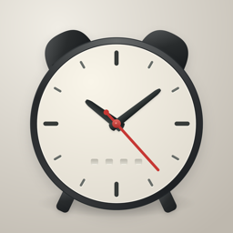

도트 알람
공휴일·대체공휴일·연휴엔 알아서 쉬고, 다음 날 다시 깨워 주는 한국 달력 알람이에요. iPhone(iOS 26 이상)에서 쓸 수 있어요.
문의하기
앱을 쓰다 막히거나 고쳤으면 하는 점이 있으면 메일로 알려 주세요.
앱의 설정 › 문제 보내기를 누르면 앱 버전과 알람 상태가 담긴 메일이 만들어져요. 그대로 보내 주시면 더 빨리 확인할 수 있어요.
자주 묻는 것
공휴일인데 알람이 울렸어요
알람 편집에서 '빨간날엔 쉬기'가 켜져 있는지 확인해 주세요. 앱은 공휴일 자료를 하루 한 번 확인해요. 설정 › 공휴일에서 '지금 확인'을 누르면 바로 받아요.
알람이 울리지 않아요
iPhone 설정에서 도트 알람의 알람 권한이 켜져 있어야 해요. 권한이 꺼져 있으면 앱의 설정 탭에 '알람 권한 켜기'가 보여요.
알람 소리가 들리지 않았어요
이어폰이 연결돼 있으면 알람 소리가 이어폰으로 나올 수 있어요. 잘 때는 이어폰 연결을 끊어 두세요.
알람이 두 번 울려요
기본 시계 앱에도 같은 알람이 켜져 있으면 두 번 울려요. 한쪽 알람을 꺼 주세요.
교대 근무처럼 요일이 일정하지 않아요
알람 편집의 '반복'에서 '고른 날'을 고르면 달력에서 고른 날에만 울려요. 주간·야간·휴무처럼 돌아가는 근무는 달력 아래 '순서대로 채우기'로 한 번에 넣을 수 있고, 바뀐 날은 달력 오른쪽 위 '선택'으로 여러 날을 골라 바꿀 수 있어요.
알람과 쉬는 날이 서버로 보내지나요?
아니요. 회원가입이 없고, 알람과 쉬는 날은 이 iPhone 안에만 저장돼요.